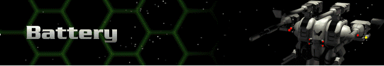

All computers are gradually available to all Hercs.
Bertrand-Altase – old-style targeting computer phased out of regular use, but still used by mercenaries without the credits for anything better.
Lock-On 100 – semi-automated tracking with additional sensors increase weapon accuracy.
Lock-On 205 – better automated tracking with more sophisticated sensors further increase weapon accuracy.
Lock-On 440 – the ultimate in tracking and sensor targeting systems.
Quickfire 11 – increases in the weapon’s pseudo-neural paths allow for finer adjustments and quicker responses.
Quickfire 11A – greater advancements in pseudo-neural paths offer more pronounced advantages.
Lock-On 1000 – combines pseudo-neural pathway optimization with the latest Lock-On technology to efficiently enhance weapon effectiveness.
Image Enhancement – target pre-processing and re-creation enhance anticipated position determination.
True Lock – further pre-processing and vector analysis provide excellent targeting intelligence.
Fire Control Manager – comprehensive weapon management frees the pilot to concentrate solely on targeting.
Quickfire 3000 – incorporating all existing fire control systems, this is the ultimate in weapon targeting enhancement.